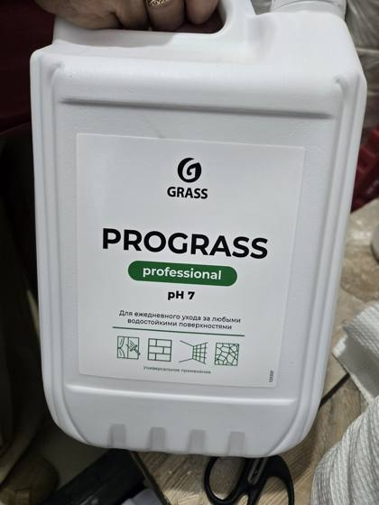
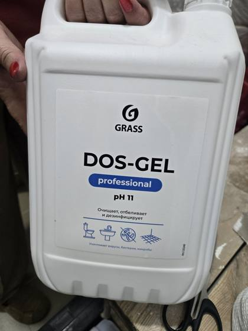
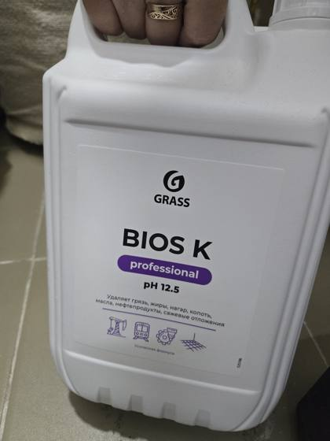
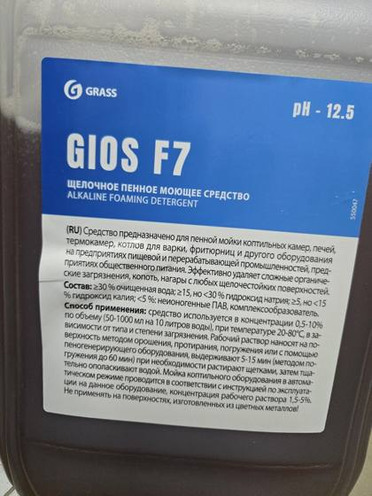
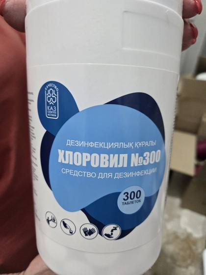
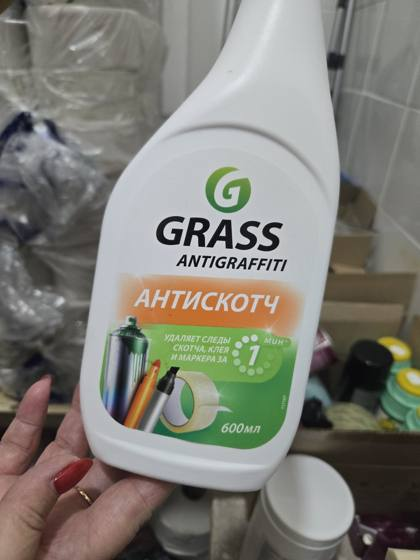

Карта химииХимия картасы
Перчатки всегда; маска — при хлоре и кислоте; очки — при разведении концентрата. Попало в глаза или на кожу: 15 минут водой → к врачу с этикеткой.Қолғап — әрдайым; бетперде — хлор мен қышқылмен жұмыста; көзілдірік — концентратты сұйылтқанда. Көзге немесе теріге тисе: 15 минут сумен жуып, этикетканы алып дәрігерге барыңыз.
▶ Видеоурок 2. Моющие средства▶ 2-бейнесабақ. Жуғыш құралдар

Prograss
Нейтральное, низкопенноеБейтарап, аз көбікті
- Для чегоНе үшін
- Ежедневно: пол, плитка, камень, стекло, двери, столы. Синяя зона — торговый зал, коридорыКүнделікті: еден, плитка, тас, әйнек, есік, үстел. Көк аймақ — сауда залы, дәліздер
- НельзяБолмайды
- Мягкая мебель; старый жир и налёт не берётЖұмсақ жиһаз; ескі май мен қақты кетірмейді
- ДозировкаМөлшері
- Ежедн. 2–10 мл/л (ведро 10 л — 20–100 мл); генеральная 15–50 мл/лКүнделікті 2–10 мл/л (10 л шелекке — 20–100 мл); генералды жинау 15–50 мл/л
- Средства защитыҚорғаныш құралдары
- ПерчаткиҚолғап
- Поломоечная машинаЕден жуатын машина
- ✅ Можно✅ Болады

Dos-Gel
Щелочное с хлоромХлоры бар сілтілі
- Для чегоНе үшін
- Унитазы, раковины, кафель; дезинфекция. Красная зона — санузлыУнитаз, раковина, кафель; дезинфекция. Қызыл аймақ — дәретханалар
- НельзяБолмайды
- НЕ смешивать с кислотой! Цветные ткани. Всегда смывать водойҚышқылмен араластыруға БОЛМАЙДЫ! Түсті маталар. Әрдайым сумен шаю
- ДозировкаМөлшері
- Пол: макс. 1:100 (1%); унитаз — концентратЕден: ең көбі 1:100 (1%); унитаз — концентрат
- Средства защитыҚорғаныш құралдары
- Перчатки, маска, проветривание; очки при разведенииҚолғап, бетперде, желдету; сұйылтқанда — көзілдірік
- Поломоечная машинаЕден жуатын машина
- см. этикеткуэтикетканы қараңыз

Bios K
Сильнощелочное, без хлораКүшті сілтілі, хлорсыз
- Для чегоНе үшін
- Жир, масло, копоть, нагар, белок — генеральная уборка, фудкорт (зелёная зона, обязательно смыть)Май, мұнай, күйе, нагар, ақуыз — генералды жинау, фудкорт (жасыл аймақ, міндетті түрде сумен шаю)
- НельзяБолмайды
- Ежедневная уборка; алюминий, краска, лак, дерево. Обжигает кожу и глазаКүнделікті жинауға емес; алюминий, бояу, лак, ағаш. Теріні және көзді күйдіреді
- ДозировкаМөлшері
- Вручную 30–50 мл/л, вода 40–60°C; 1–2 мин, не давать высохнуть, смытьҚолмен 30–50 мл/л, су 40–60°C; 1–2 мин, кептірмей, сумен шаю
- Средства защитыҚорғаныш құралдары
- Перчатки, очки; после работы смыть водойҚолғап, көзілдірік; жұмыстан кейін сумен шаю
- Поломоечная машинаЕден жуатын машина
- см. этикеткуэтикетканы қараңыз

Gios F7
Щелочное пенное (NaOH/KOH)Сілтілі, көбікті (NaOH/KOH)
- Для чегоНе үшін
- Печи, гриль, фритюр: тяжёлый жир, нагар. Только через пеногенераторПеш, гриль, фритюр: ауыр май, нагар. Тек көбік генераторы арқылы
- НельзяБолмайды
- Цветные металлы; поломоечная машина. Сильно обжигаетТүсті металдар; еден жуатын машина. Қатты күйдіреді
- ДозировкаМөлшері
- 0,5–10%: 50–1000 мл на 10 л (этикетка)0,5–10%: 10 л-ге 50–1000 мл (этикетка бойынша)
- Средства защитыҚорғаныш құралдары
- Перчатки, очкиҚолғап, көзілдірік
- Поломоечная машинаЕден жуатын машина
- ❌ Нельзя — пенное!❌ Болмайды — көбікті!

Хлоровил №300Хлоровил №300
Хлорные таблетки (Казсинтез)Хлор таблеткалары (Казсинтез)
- Для чегоНе үшін
- Дезинфекция: санузлы, поверхности, инвентарьДезинфекция: дәретханалар, беттер, мүкәммал
- НельзяБолмайды
- НЕ смешивать с кислотой, аммиаком и другими средствами!Қышқылмен, аммиакпен және басқа құралдармен араластыруға БОЛМАЙДЫ!
- ДозировкаМөлшері
- По инструкции на этикетке. Ориентир для таблетки ~3 г (≈1,5 г акт. хлора) на 10 л: 1 таб. — 0,015% (ежедневно), 2 — 0,03% (санузлы), 4 — 0,06% (генуборка), ≈7 — 0,1% (кровь, биожидкости). Холодная вода, раствор свежий каждый день; поверхности для пищи — смытьЭтикеткадағы нұсқаулық бойынша. ~3 г таблетка (≈1,5 г белсенді хлор), 10 л суға бағдар: 1 таб. — 0,015% (күнделікті), 2 — 0,03% (дәретханалар), 4 — 0,06% (генералды жинау), ≈7 — 0,1% (қан, биосұйықтықтар). Суық су, ерітінді күн сайын жаңа; тағам тиетін беттерді сумен шаю
- Средства защитыҚорғаныш құралдары
- Маска, перчатки, проветриваниеБетперде, қолғап, желдету
- Поломоечная машинаЕден жуатын машина
- см. этикеткуэтикетканы қараңыз

Антискотч (Grass Antigraffiti)Антискотч (Grass Antigraffiti)
Растворитель, спрей 600 млЕріткіш, 600 мл спрей
- Для чегоНе үшін
- Скотч, клей, маркер, этикетки — за 1 минутуСкотч, желім, маркер, этикеткалар — 1 минутта
- НельзяБолмайды
- Губки, поролон; много распылять в закрытом помещении. Сначала проверь на незаметном местеГубка, поролон; жабық жерде көп бүркуге болмайды. Алдымен көрінбейтін жерде тексеріңіз
- ДозировкаМөлшері
- Готов к применению, не разбавлятьҚолдануға дайын, сұйылтпаңыз
- Средства защитыҚорғаныш құралдары
- Перчатки; проветриваниеҚолғап; желдету
- Поломоечная машинаЕден жуатын машина
- см. этикеткуэтикетканы қараңыз
Данные — из урока 2 и этикеток. Если чего-то нет — смотри этикетку или спроси бригадира.Деректер 2-сабақтан және этикеткалардан алынды. Қандай да бір мәлімет жоқ болса — этикетканы қараңыз немесе бригадирден сұраңыз.